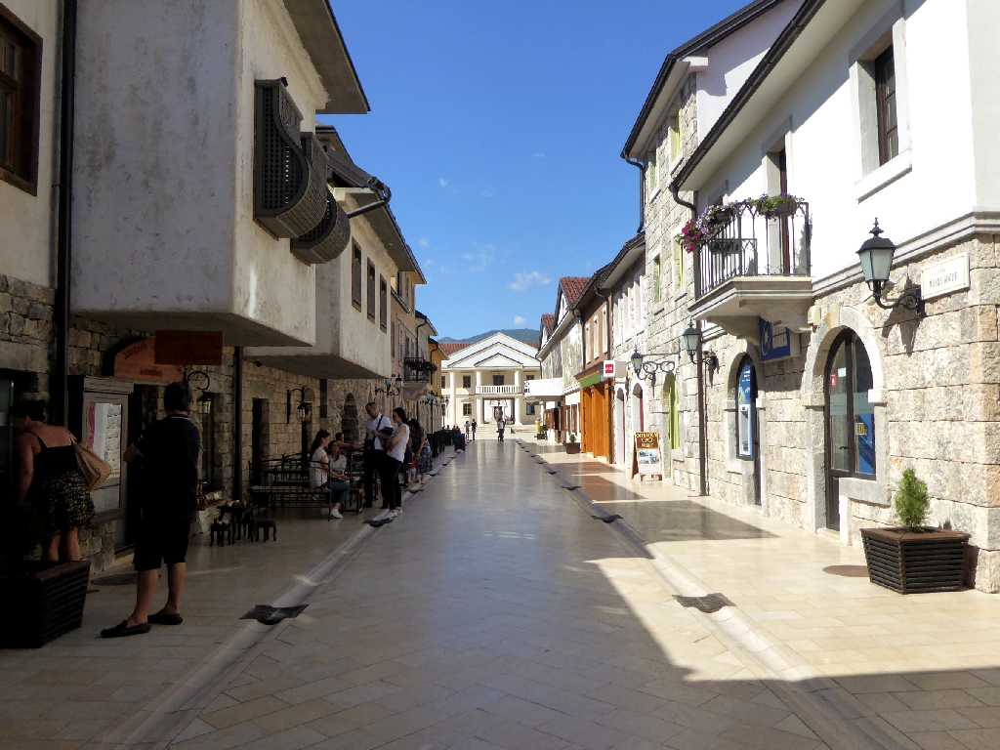
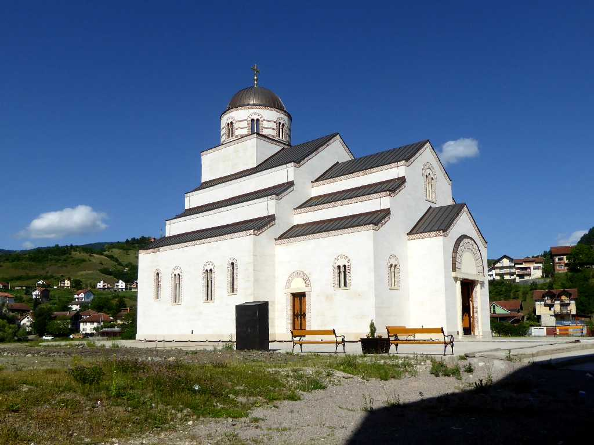
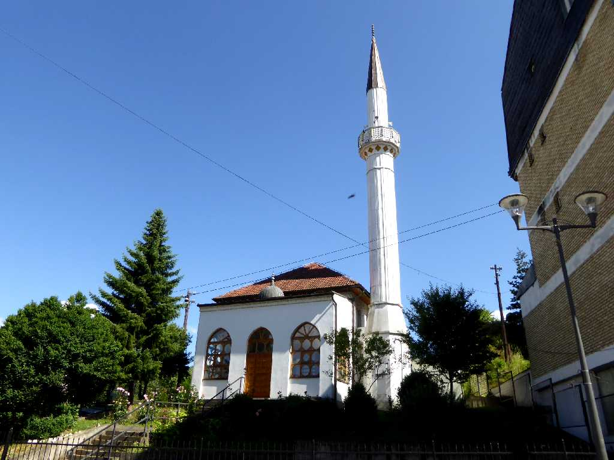
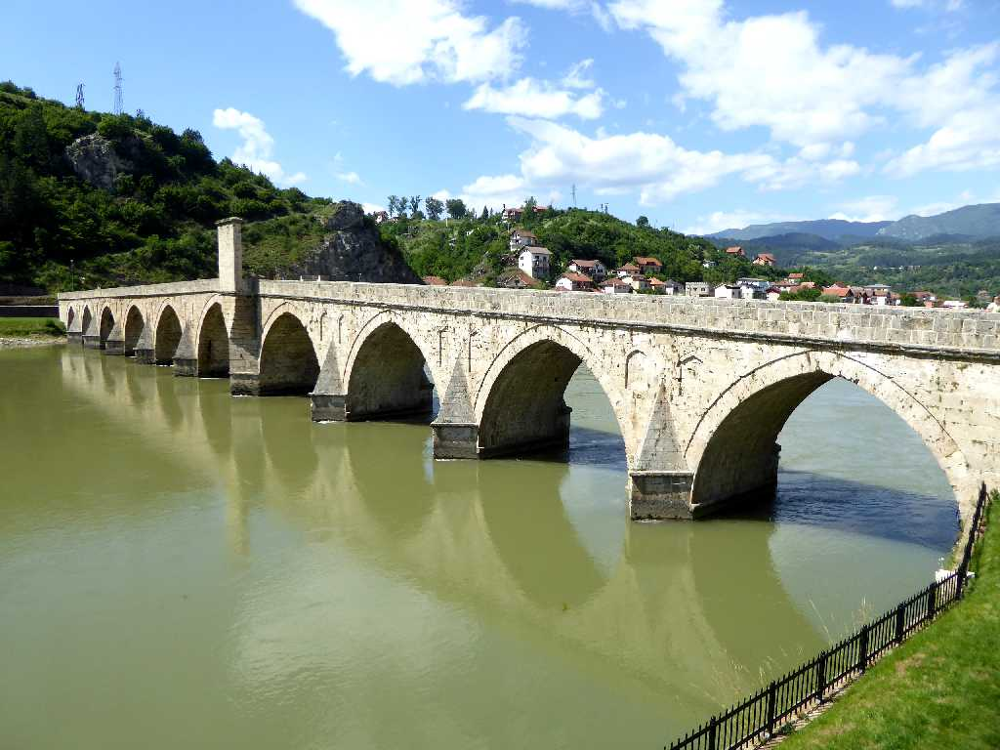
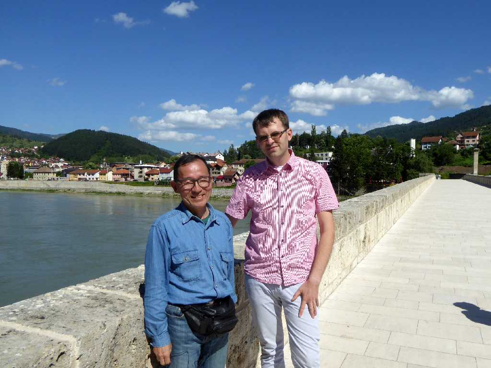

Visegrad
サラエボとイスタンブールを結ぶ戦略的にも経済的にも重要なルートとなるビシェグラードの街並み

Church Visegrad

Mosque Visegrad

Mehmed Paša Sokolović Bridge Drina River Visegrad
１５７７年にオスマン帝国がドリナ川に架けた全長１７９.5ｍのメフメドパシャソコロヴィッチ橋は建築水準の高を今に伝えている

June 15 2016 Visegrad